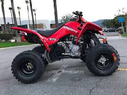
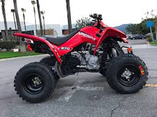
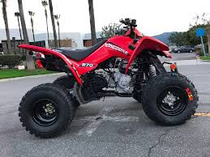

Home/About
Contacts
Portfolio
Repositories-Links to some of my proudest Creations
COMPLETE GIT HUB REPOS
Password Password-Generator Project
Timer Quiz Project
Sports API Project
Code Enthusiast

Love ATVs
Dog owner
Love Dirt Bikes
 Code Enthusiast

Love ATVs
Dog owner
Love Dirt Bikes
Code Enthusiast

Love ATVs
Dog owner
Love Dirt Bikes